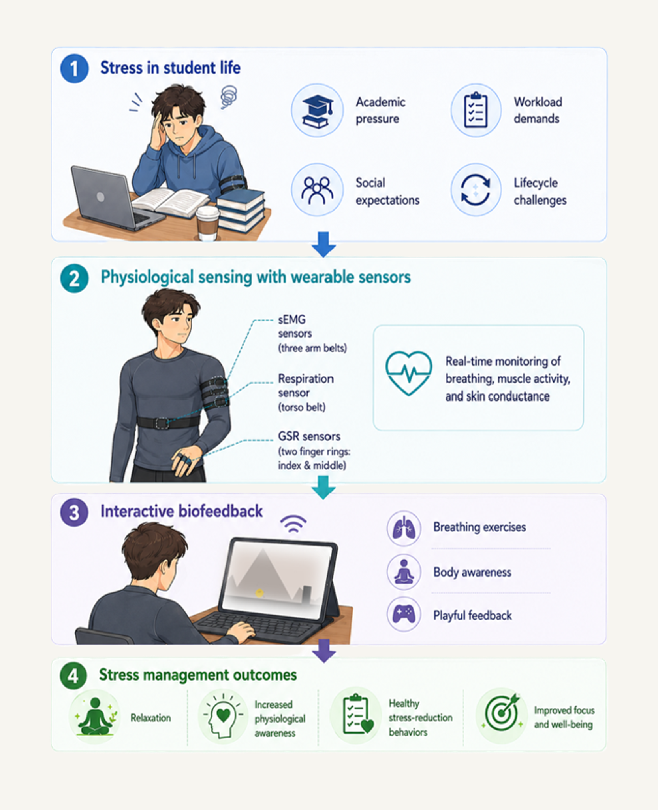

A Wearable System for Stress Relieving
Flow Up combines soft wearable sensing with interactive biofeedback to make stress-management practices more engaging, accessible, and embodied.
Due to academic pressure, workload demands, social expectations, and lifecycle challenges, university students and researchers commonly experience substantial amounts of stress. Long-term stress can have a detrimental impact on one's general well-being, motivation, focus, and mental health. The need for easily available, interesting, and useful resources that assist students in identifying and managing their stress in daily life is therefore essential.
The purpose of this project is to develop a prototype that can identify human stress levels and give users access to an interactive, sensor-based stress management tool. The aim of the system is to help users become more relaxed, more aware of their physiological state, and more supportive of the development of healthy stress-reduction behaviors by integrating real-time physiological monitoring with entertaining gameplay features.
Flow Up is a physiological sensing smart garment designed to support stress reduction among university students by providing real-time feedback on breathing and muscle activity. The system combines textile-based respiration sensing, surface electromyography (sEMG), and galvanic skin response (GSR) sensing with an interactive game platform.
Through user research, garment prototyping, sensor testing, and user interface iteration, Flow Up explores how soft wearable systems can transform controlled breathing and body awareness into playful biofeedback exercises.

FlowUp turns body signals into interactive input, allowing users to practise breathing control and body awareness through game-based interaction.
Textile sensors are placed on the body to detect breathing, muscle activity, and skin response.
Signals are sent from Arduino to Processing through serial communication.
Breathing controls movement in the game, while muscle activation can trigger interactive actions.